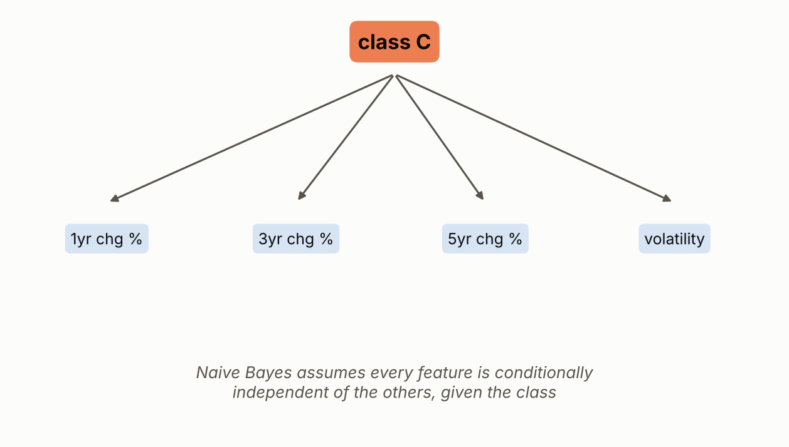
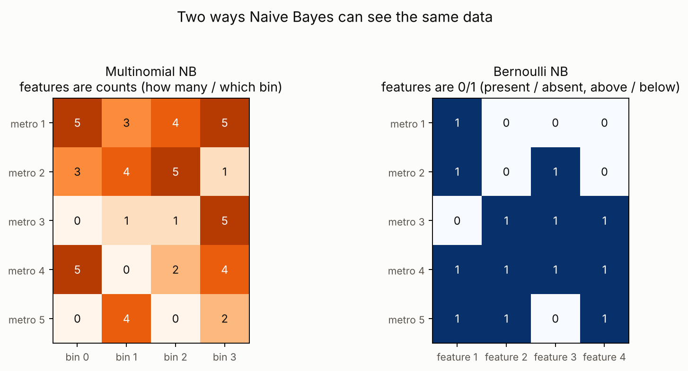
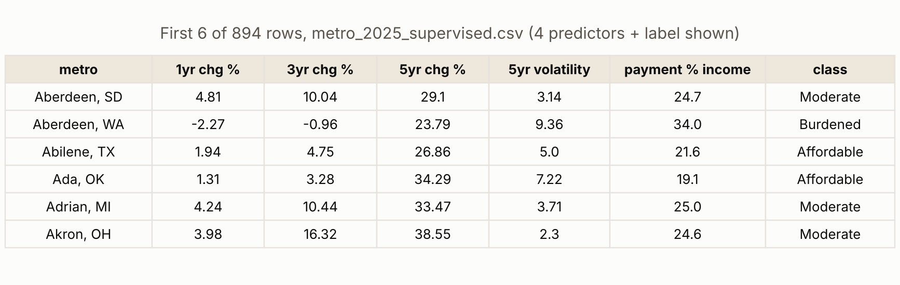
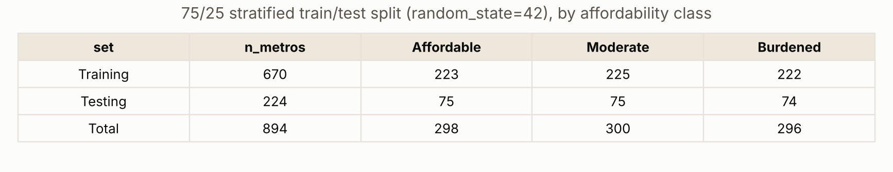
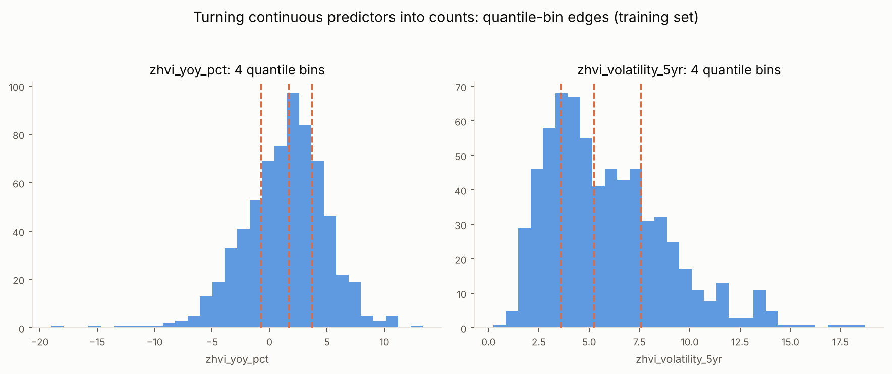
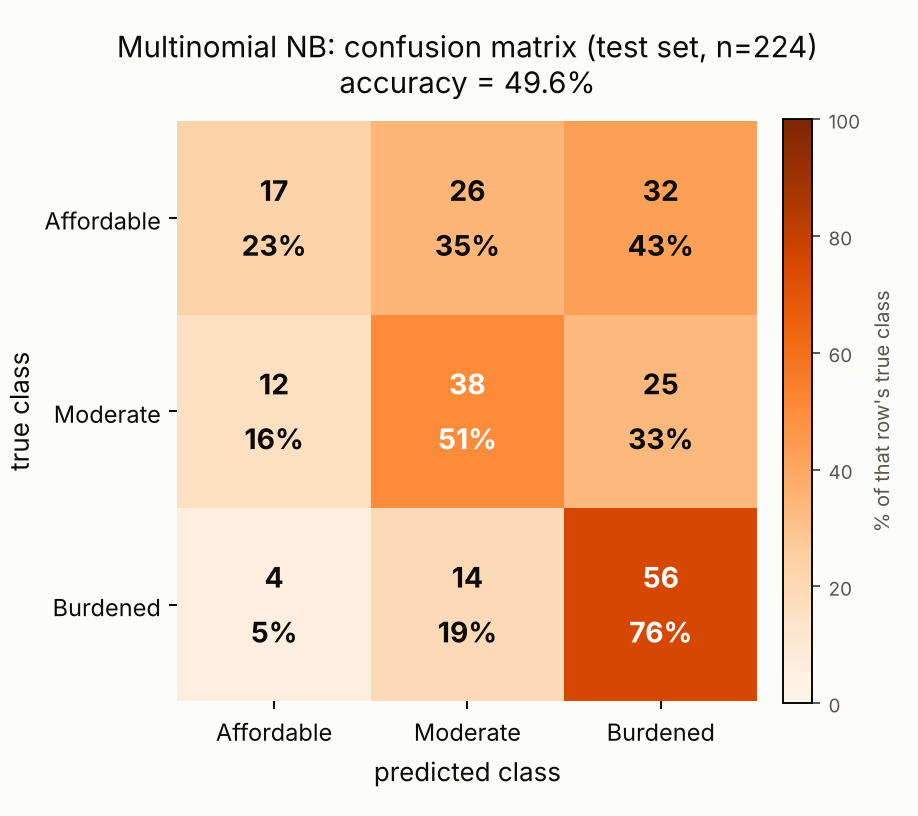
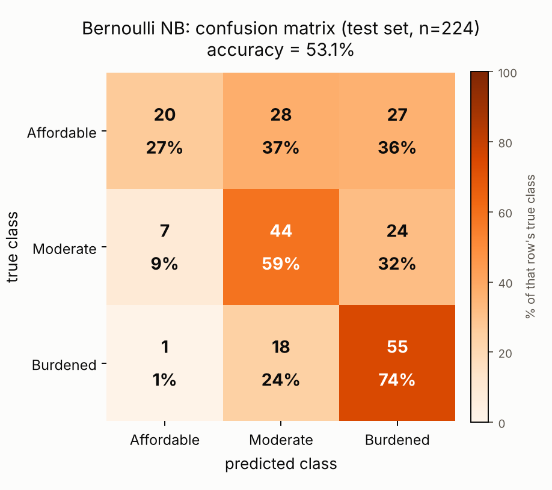

Naive Bayes
Multinomial and Bernoulli NB predicting affordability class
Overview
Naive Bayes is a classification method based on Bayes theorem, which calculates the probability of a class given the observed data by combining the probability of the data within each class with how common that class already is. It is called naive because it assumes every predictor contributes independently to that probability, ignoring any correlation between predictors, even though this assumption is rarely exactly true in real data. Despite this simplification, Naive Bayes classifiers tend to perform reasonably well and are fast to train, which is why they are a common first method tried for text classification tasks such as spam detection and sentiment analysis, as well as for general-purpose classification on tabular data like the one used in this project. The goal of applying it here is to see whether a metro's recent price growth and volatility alone, without being told how expensive it already is, can predict which of the three affordability classes (Affordable, Moderate, Burdened) it currently falls into, a step toward understanding which metros are moving toward becoming less affordable before that shows up directly in the price-to-income ratio.


Two variants of Naive Bayes are compared here. Multinomial Naive Bayes models each predictor as a count, how many times something occurs or which category of a discrete scale it falls into, and estimates, for each class, the probability distribution over those counts. It requires non-negative input, so it is normally used with count data such as word frequencies in text, or, as done here, with continuous features that have been discretized into ordered bins. Bernoulli Naive Bayes instead models each predictor as a binary indicator, present or absent, true or false, above or below some threshold, and separately estimates the probability of that indicator being true within each class. Bernoulli NB explicitly accounts for a feature being absent as well as present, which matters when the absence of something is itself informative, while Multinomial NB only looks at the counts of the features that do occur.
Data Prep
Naive Bayes is a supervised method, so it needs labeled data: a class to predict for every row. This differs from clustering and PCA in Module 2, which required unlabeled numeric data only. Supervised methods also need the data split into a Training Set, used to fit the model's parameters, and a Testing Set, used only to check how the fitted model performs on metros it never saw during training. These two sets must be disjoint, contain no overlapping rows, because testing on rows the model already learned from would overstate how well it actually generalizes. Here the 894 metros are split 75/25 into 670 training rows and 224 testing rows, using stratified sampling so the three affordability classes appear in the same proportion in both sets. The four predictors (1, 3, and 5 year price change, and 5 year price volatility) are left on their original numeric scale for Bernoulli NB's thresholding, and separately discretized into four bins for Multinomial NB, since that model needs count-like input rather than raw continuous numbers.

metro_2025_supervised.csv: 4 price-growth/volatility predictors, the payment-to-income ratio the label is built from, and the resulting 3-class label.
Full file on GitHub ↗
Code
Python, using scikit-learn. Multinomial NB needs non-negative, count-like input, so each predictor is discretized into 4 quantile bins (fit on the training set only) before fitting; Bernoulli NB needs binary input, so each predictor is thresholded at its own training-set median.

binner = KBinsDiscretizer(n_bins=4, encode="ordinal", strategy="quantile")
X_train_binned = binner.fit_transform(X_train)
X_test_binned = binner.transform(X_test)
mnb = MultinomialNB()
mnb.fit(X_train_binned, y_train)
mnb_pred = mnb.predict(X_test_binned)
⋮ # Bernoulli NB: threshold each predictor at its training-set median instead
medians = X_train.median()
X_train_bin = (X_train >= medians).astype(int)
bnb = BernoulliNB().fit(X_train_bin, y_train)- prep_supervised_data.py : builds the labeled table and the stratified train/test split
- run_naive_bayes.py : Multinomial NB and Bernoulli NB, confusion matrices, accuracy
Results
Both Naive Bayes variants land well above the 33.3 percent random-guessing baseline for a 3-class problem but well below what would count as reliable prediction. Multinomial NB reaches 49.6 percent test accuracy and Bernoulli NB reaches 53.1 percent, so forcing each predictor down to a single above/below- median bit actually did slightly better here than keeping four quantile bins. Looking at the confusion matrices, most of both models' mistakes land in the class next to the true one (Affordable confused with Moderate, Moderate confused with Burdened) rather than at the opposite extreme, which suggests the predictors do carry some real signal about the ordering of affordability even where they fail to nail the exact class. Bernoulli NB's biggest weakness is the Moderate class, which it predicts for only 1 of 75 metros that actually belong to it, collapsing most of that class into the model's prediction of Affordable instead.
| Model | Test accuracy |
|---|---|
| Multinomial NB (quantile-binned) | 49.6% |
| Bernoulli NB (median-binarized) | 53.1% |
| Random guessing (3 balanced classes) | 33.3% |


Conclusions
Price growth and volatility alone, without being told how expensive a metro already is, can predict its current affordability tier only moderately better than chance. This says something about the housing affordability question this project is built around: a metro's trajectory does not fully determine its outcome, since two metros with similar recent price growth can land in different affordability classes depending on where their prices started. That is consistent with the Module 2 finding that price level and price growth are largely separate dimensions (PC1 versus PC2 in the PCA results), and it suggests that any model trying to predict or explain affordability for young buyers needs to include price level directly rather than relying on growth and volatility trends by themselves.